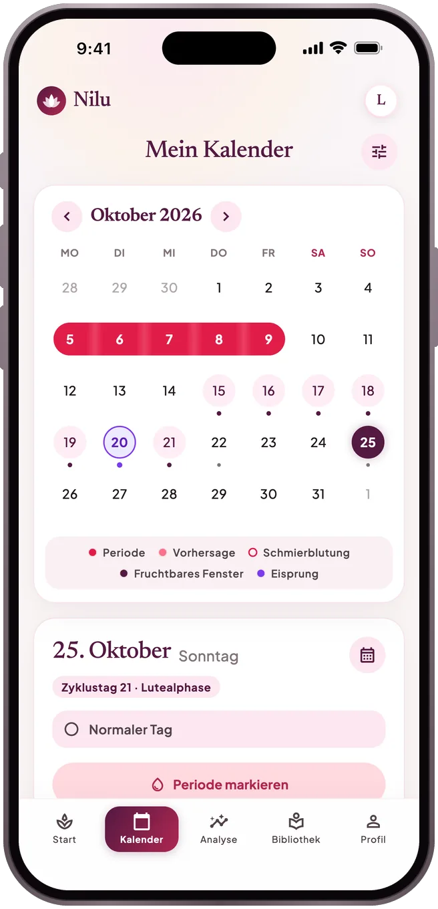
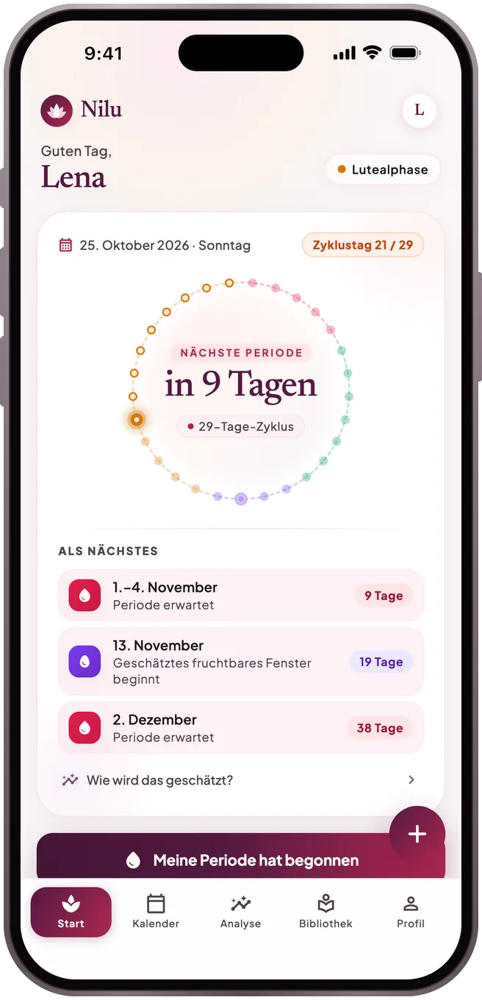
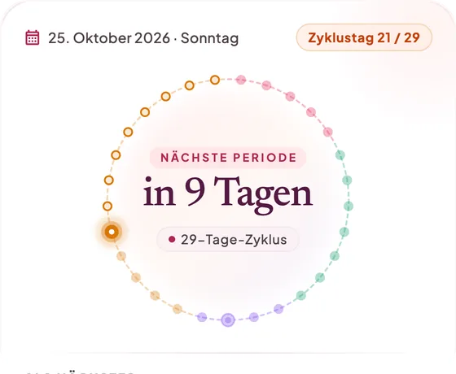
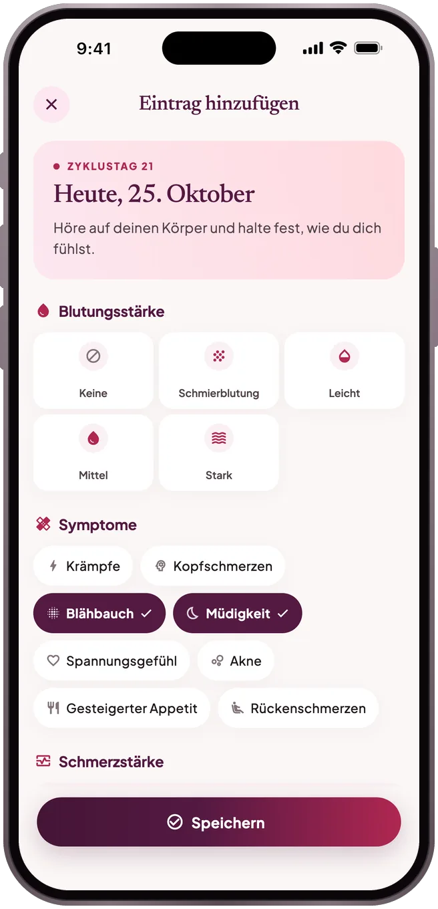
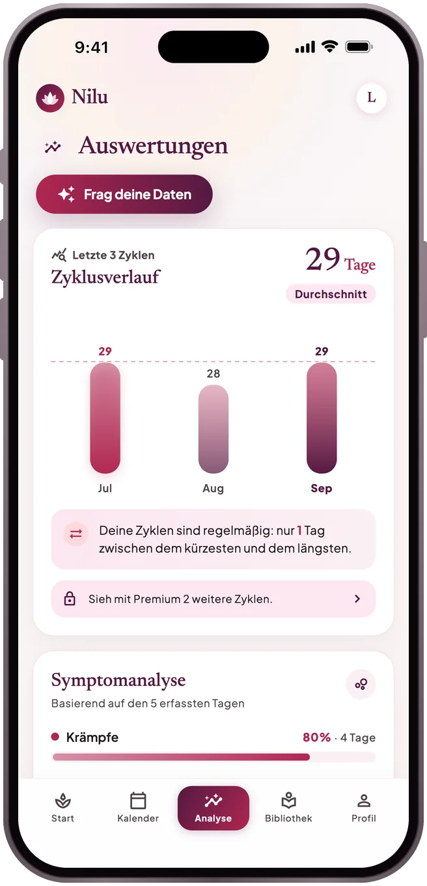
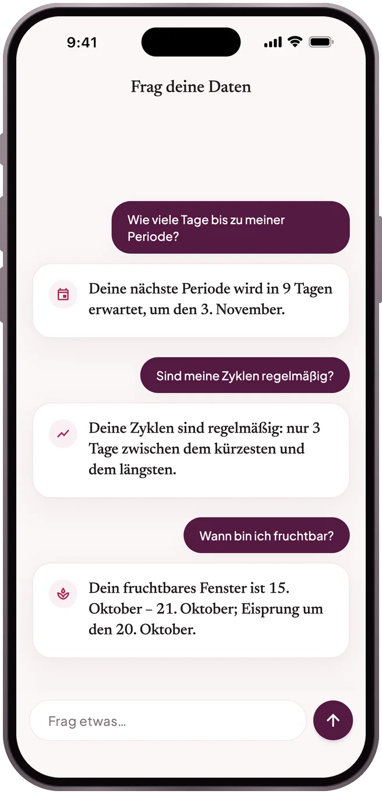
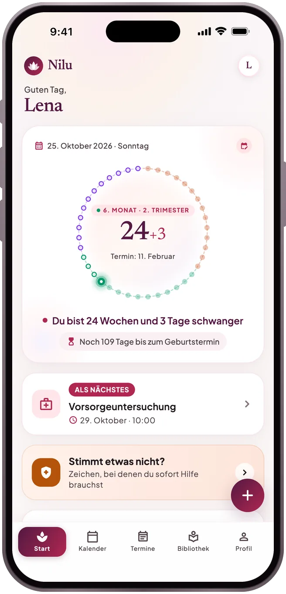
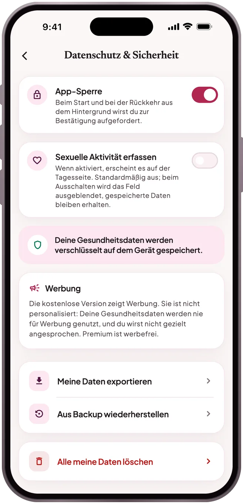

KALENDER
Deine nächste Periode als Zeitraum
Trag deine Periode im Kalender ein. Nilu zeigt die nächste als wahrscheinlichen Zeitraum statt als einzelnes Datum – mit der Erklärung, wie er berechnet wurde, und dem geschätzten fruchtbaren Fenster.
Periode · Schwangerschaft · Wochenbett
Ein ruhiger Tracker für Periode, Schwangerschaft und Wochenbett. Alles, was du einträgst, bleibt verschlüsselt auf deinem Handy — kein Tracking.
Bald im App Store und bei Google Play
So funktioniert’s


Was die App kann
KALENDER
Trag deine Periode im Kalender ein. Nilu zeigt die nächste als wahrscheinlichen Zeitraum statt als einzelnes Datum – mit der Erklärung, wie er berechnet wurde, und dem geschätzten fruchtbaren Fenster.
TAGEBUCH
Blutung, Schmerzen, Stimmung, Symptome und Notizen – mit wenigen Tippern gespeichert und jederzeit nachlesbar.

AUSWERTUNGEN
Wie lang sind deine Zyklen, wie regelmäßig, welche Symptome kehren wieder? Dein ganzer Zyklusverlauf und eine Übersicht für den Arztbesuch sind kostenlos.

FRAG DEINE DATEN
Frag „Wie viele Tage bis zu meiner Periode?“ oder „Sind meine Zyklen regelmäßig?“. Die Antworten entstehen auf deinem Handy aus denselben Zahlen, die du in der App siehst – nichts geht an ein KI-Modell, und nichts wird erfunden.

SCHWANGERSCHAFT
In der Schwangerschaft und im Wochenbett: Woche und Tag, Termine und Erinnerungen und die Warnzeichen, bei denen du nicht warten solltest.

Zyklustag und nächste Periode auf einen Blick; Widget und Erinnerungen entstehen auf deinem Gerät.
Belegte Artikel zu Periode, Ernährung, Psyche und Beziehungen.
Geteilt wird nur der Nähe-Status, den du wählst – mit deiner ausdrücklichen Einwilligung.
Zieh mit einem passwortgeschützten Backup auf ein neues Handy um oder aktiviere die Cloud-Synchronisierung mit deinem Konto.
Datenschutz

Verschlüsselt auf deinem Handy. Solange du die Cloud-Synchronisierung nicht einschaltest, verlassen keine Gesundheitseinträge dein Gerät; die Partnerfunktion sendet nur den Nähe-Status, den du teilen möchtest. Details in der Datenschutzerklärung.
Erstelle auf dem alten Handy ein Backup über Profil → Datenschutz & Sicherheit → Meine Daten exportieren. Stelle es auf dem neuen Handy im selben Bildschirm mit Aus Backup wiederherstellen wieder her. Oder schalte unter Profil → Konto & Cloud-Backup die Cloud-Synchronisierung ein und tippe auf dem neuen Handy im Willkommensbildschirm auf „Meine Einträge aus der Cloud wiederherstellen“ und melde dich mit demselben Konto an.
Abos verwaltet der Store. Auf dem iPhone: Einstellungen → dein Name → Abonnements → Nilu. Auf Android: Google Play → Profil → Zahlungen und Abos → Abos → Nilu. Eine Kündigung gilt bis zum Ende des Zeitraums.
Leg ohne Konto los; melde dich mit Apple, Google oder E-Mail an, wenn du ein Backup willst. Solange du die Synchronisierung nicht einschaltest, verlassen deine Einträge dein Handy nicht.
Nilu stellt keine Diagnose, empfiehlt keine Behandlung und ist kein Verhütungsmittel. Vorhersagen werden aus deinen früheren Einträgen berechnet und sind ungefähr.